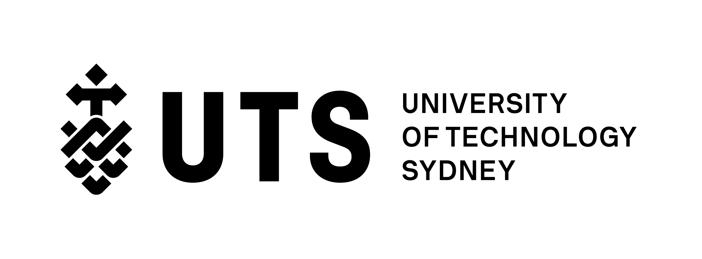
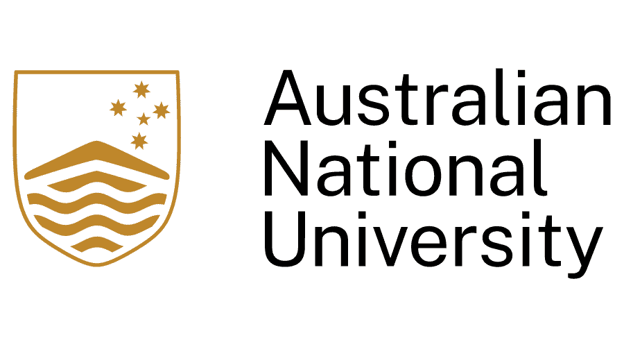
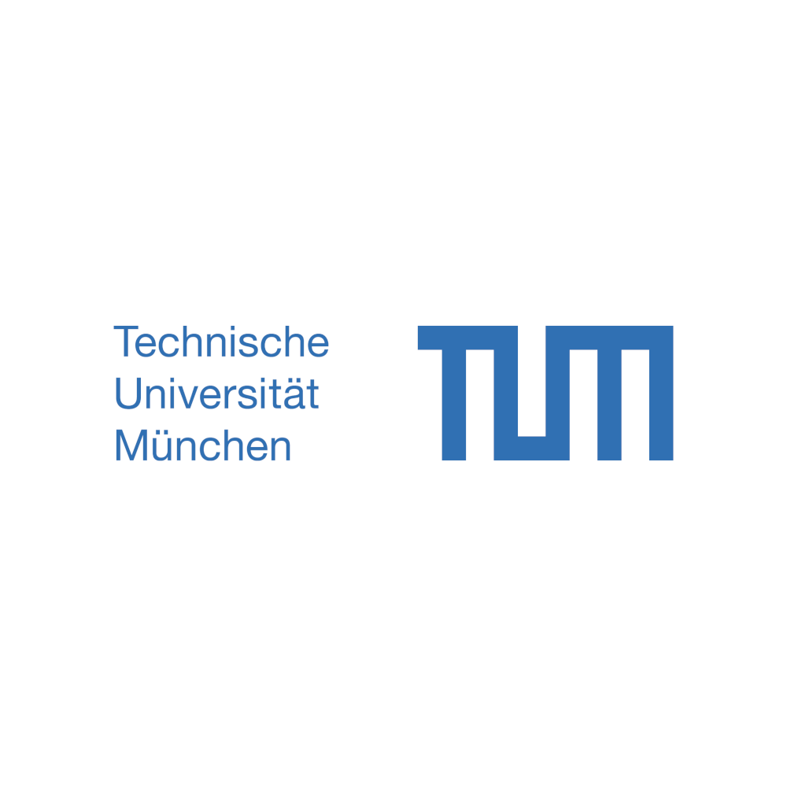

1. Universitas Indonesia

Universitas Indonesia disingkat sebagai UI,
adalah perguruan tinggi di Indonesia.
Kampus utamanya terletak di bagian Utara dari Depok,
Jawa Barat tepat di perbatasan antara Depok dan wilayah Jakarta Selatan. Saya memilih UI
karena universitas ini adalah perguruan tinggi yang terbaik dan terpandang di Indonesia.
Saya tertarik dengan fakultas ilmu komputer di UI. Di sana saya
bisa belajar cara membuat aplikasi, web developer, dll yang berhubungan dengan
industri teknologi.
2. Binus University

Universitas Bina Nusantara (BINUS) pada awalnya berasal dari sebuah institusi
pelatihan komputer Modern Computer Course yang didirikan pada 21 Oktober 1974.
Akademi ini menawarkan pendidikan manajemen informatika dan teknik informatika.
BINUS UNIVERSITY merancang sebuah program untuk menciptakan generasi profesional
yang berkualifikasi internasional dalam bidang ilmu komputer. Secara detail, jurusan ilmu komputer
di BINUS UNIVERSITY bertujuan untuk membekali
peserta didiknya dengan pengetahuan dan keterampilan mengenai perangkat lunak,
prinsip-prinsip algoritma, IT, jaringan internet, keamanan siber, perkembangan multimedia,
dan ilmu terkait perkembangan teknologi komputer lainnya.
3. University of Technology Sydney (UTS)

UTS adalah universitas teknologi terkemuka di Australia, Sydney, NSW
yang dikenal mendorong perubahan global yang positif.
Ketika Anda belajar di UTS, Anda bergabung dengan komunitas mahasiswa,
staf, dan mitra industri yang terinspirasi dan membentuk masa depan.
Saya tertarik dengan teknologi Informasi UTS yang menghasilkan lulusan
yang merupakan pemimpin generasi mendatang dengan keterampilan
intrapreneurship dan transformasi digital di dunia nyata di
bidang-bidang baru dan sedang berkembang.
4. Institut Teknologi Bandung

Institut Teknologi Bandung (ITB) dikenal dengan memiliki fakultas dan jurusan yang lengkap.
Saya sangat tertarik dengan program studi Informatika yang akan mempelajari berbagai topik ilmu
komputer. Kurikulum program ini dirancang untuk mempersiapkan siswa memasuki bidang komputer
yang berkembang pesat dan pasar kerja yang kompetitif.
Pengembangan kurikulumnya didasarkan pada kurikulum dan rekomendasi
kursus oleh Institute of Electrical and Electronic Engineer Computer
Society dan Association for Computing Machinery.
5. National University of Singapore (NUS)

National University of Singapore (NUS) merupakan universitas terpandang di Singapore.
NUS menawarkan pendidikan Ilmu Komputer yang benar-benar mendalam.
Universitas ini dapat memberikan landasan teknis terkuat yang tersedia
di institusi mana pun di Singapura, di semua sub-disiplin ilmu komputasi.
Program didasarkan pada teori dan penekanan
khusus pada keterampilan yang penting bagi pemberi kerja. Sebagai bagian dari
pendidikan, siswa akan membangun dan mengembangkan aplikasi, sambil mempelajari
landasan teori Ilmu Komputer yang memungkinkan semuanya.
6. Australian National University (ANU)

Universitas Nasional Australia adalah sebuah universitas yang terletak di Canberra,
ibu kota Australia. Universitas ini memiliki tujuh fakultas utama dan
beberapa institut yang lain. ANU berada di peringkat #1 di Australia dan #27 di
dunia menurut QS World University Rankings 2022. Untuk ANU
Computing berada di peringkat #2 di Australia. Saya tertarik dengan peringkat dan akademik yang
diberikan oleh universitas ANU.
7. Massachusetts Institute of Technology: MIT

Massachusetts Institute of Technology (MIT) adalah institusi riset swasta dan universitas yang terletak di kota
Cambridge, Massachusetts. Universitas ini mengkhususkan diri pada sains dan penelitian teknologi
Saya tertarik dengan jurusan computer science di MIT. Mereka mempelajari kekuatan dan
batasan dasar komputasi, bagaimana kekuatan dan batasan berinteraksi dengan
ilmu komputer dan matematika, dan bagaimana kekuatan dan batasan tersebut
memanifestasikan dirinya dalam masyarakat, biologi, dan dunia fisik.
8. University of New South Wales

University of New South Wales (UNSW) universitas yang letaknya di NSW, Sydney. Saya ingin
menyelesaikan Sarjana Ilmu Komputer di UNSW, di sana kita mengembangkan keterampilan dan pengetahuan yang dibutuhkan untuk mengembangkan aplikasi komputer.
Bekerja dengan perangkat keras dan perangkat lunak, gelar sarjana ini mengajarkan prinsip-prinsip dasar di balik alat komputasi, sistem operasi, kompiler dan penerjemah, dan perangkat keras komputer.
Sarjana Ilmu Komputer juga berfokus pada representasi data dan struktur data dalam sistem komputer dan desain algoritma untuk manipulasi otomatis informasi ini dengan bahasa pemrograman dan sistem mesin.
9. Technical University of Munich

Technical University of Munich(TUM) adalah universitas riset yang berlokasi di Munich,
Garching dan Freising-Weihenstephan, Jerman.TUM adalah salah satu lembaga
pengajaran dan penelitian Informatika terbesar di Jerman.
TUM menggabungkan pendekatan dan metode disiplin ilmu tertentu dengan disiplin
ilmu lain. Hasilnya, laboratoriumnya yang canggih memberikan hasil yang
penerapan cerdas yang menghasilkan kemajuan nyata.
Penelitian dan pengajaran sengaja terjalin erat.
Siswa disana menerima pendidikan yang sangat baik:
Dalam peringkat universitas di dunia, Ilmu Komputer di Universitas
TUM secara konsisten berada di antara yang teratas di Jerman.
10.Monash College

Universitas Monash adalah salah satu universitas terbesar di Australia.
Kampus utamanya terletak di Clayton, Victoria, Australia.
Di fakultas IT terkemuka di Australia, Jurusan computer science
membekali Anda dengan keterampilan pemecahan masalah, pemrograman,
dan analitis yang diperlukan untuk mendorong perubahan dan penemuan
dalam mencari dunia yang lebih baik. Selami teori dan praktik secara mendalam,
lalu pilih di mana kita bisa ingin memfokuskan karier dengan berspesialisasi
dalam ilmu komputer tingkat lanjut atau ilmu data.